把 2026 年的 AI 和 2000 年的網路泡沫放在一起比：先對齊誰扮演什麼角色，再比當年崩壞的每一個環節。能比的地方用數字比，不能比的地方寫出來。
結論：問題最後收斂成一句話——2027 年的盈餘成長，能不能實現。
- 大盤估值和 2000 年差不多。只有「預估本益比」明顯較低（19 倍對 24.5～25 倍），而這個 19 倍建在「未來 12 個月盈餘比過去四季高約四成」的預期上。
- 2000 年是估值的泡沫，2026 年是盈餘的依賴。當年科技股本身極貴，但建設潮的獲利只占大盤盈餘約 5%；現在科技龍頭不貴，但大盤盈餘約兩成二連在 AI 循環上，預期的成長約四成押在 AI 收款方。
- 風險在分母，不在分子。如果盈餘預估落空，預估本益比會回到 22～24 倍，接近 2000 年的高點。
- 最該追的是 GPU 租金的趨勢（每單位電力的算力價格），它直接量需求端與供給端的距離。目前還在漲。
- 兩家模型公司的算力承諾約占四大雲端訂單存量的一半，Amazon 最高約七成。如果應用端能兌現，用現在的租金算，資本支出約 2 年就能回本；只要每 kW 時守在約 4.5 美元以上，就在 3 年以內。
跨時代最乾淨的一把尺，是「一個社會把多少產出投進同一類建設」。美國資訊處理設備加軟體的投資占 GDP，2026 年第二季是 5.05%，已經超過 2000 年底的高點 4.46%。只看硬體還沒超過（2.57% 對 2.91%），但兩年多從 1.70% 急升。
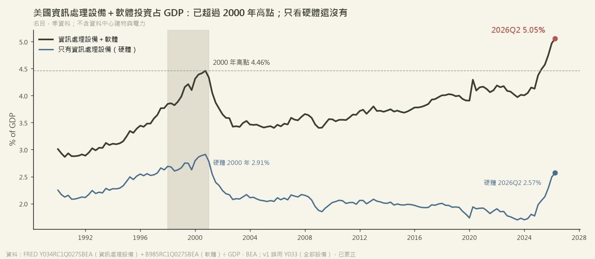
▲ 資料：FRED（BEA）資訊處理設備 Y034、軟體 B985 ÷ GDP。名目、季資料，不含資料中心建物與電力，所以 AI 的總量在這個口徑是低估的。
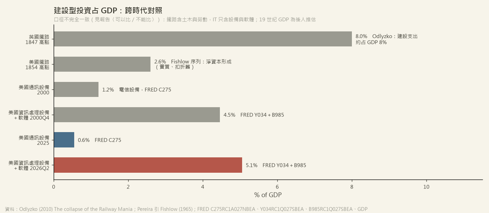
▲ 英國鐵路狂熱 1847 年約 8%（Odlyzko）、美國鐵路 1854 年 2.6%（Fishlow 序列）。口徑不完全一致：鐵路含土木與人工，IT 只含設備與軟體；鐵路能用 50 年，GPU 約 5 年，同樣的占比，回收期限完全不同。
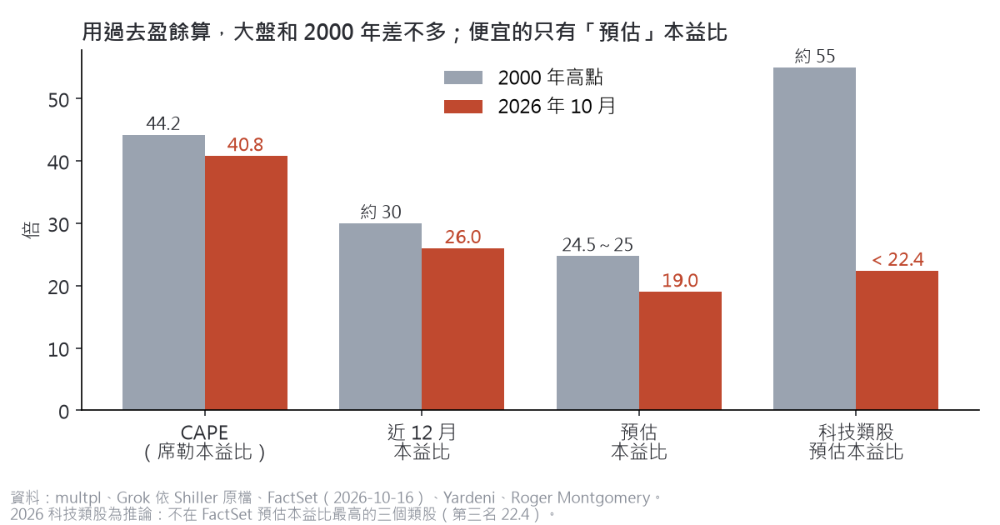
▲ 2000 年極端的是科技股本身（類股預估本益比約 55、思科本益比約 196）。現在設備龍頭不貴：輝達預估本益比約 13.5，最貴的在應用層（Palantir 營收倍數約 76）。
CAPE 與近 12 月本益比都用過去的盈餘算，兩期很接近。唯一明顯較低的預估本益比，分母正是市場對未來盈餘的預期。所以下一個問題是：這個預期有多可靠？
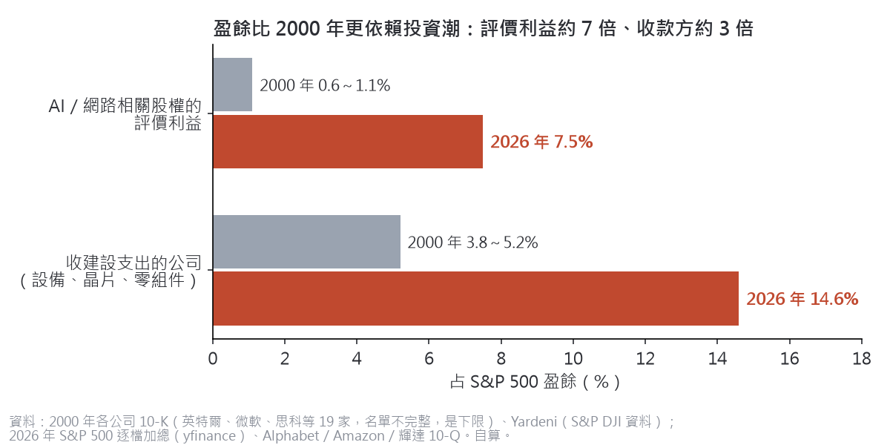
▲ 2026 年 Alphabet 近四季盈餘約一半、Amazon 第二季約六成，來自持有 Anthropic、SpaceX 等股權的評價利益（10-Q 原文）。2000 年的會計規則下，未實現利益不進淨利，必須賣掉才算；現在不用賣、不用收現金就能入帳。
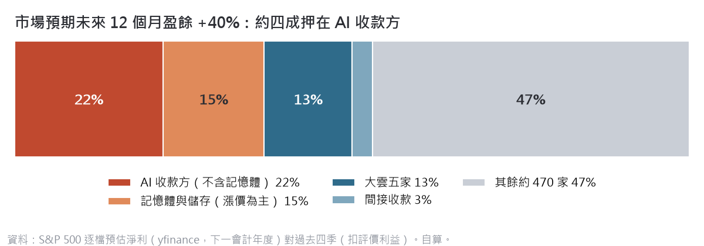
▲ 最虛的一塊是記憶體：美光預估淨利約是過去四季的三倍，預估本益比只有 4.8，代表市場自己也不太相信它能延續。
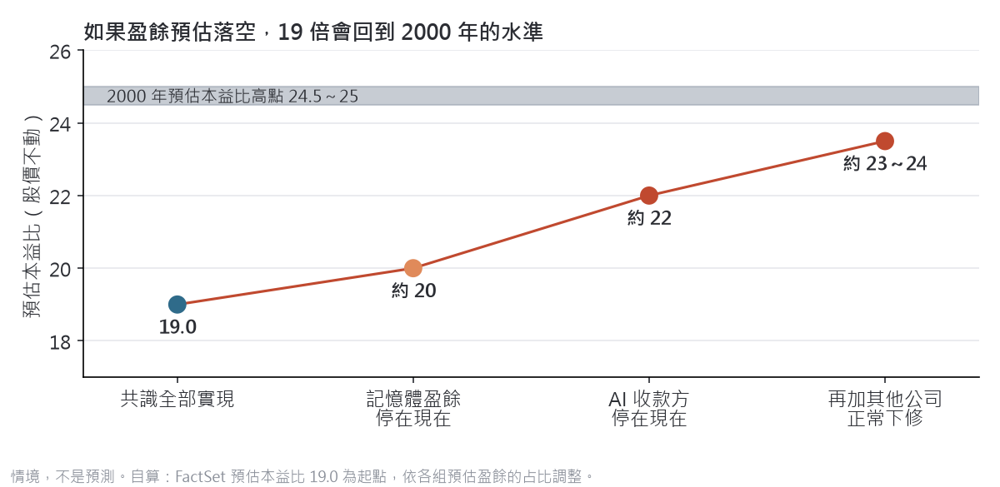
▲ 情境，不是預測。比較可能的結果是「有成長，但低於預期」：營收共識還有 +9.5%，2027 年的資本支出大多已有合約。2000 年致命的是「估值極端＋盈餘崩跌」；現在只有後半段的風險，而且還在「可能」的層次。
常見的說法是：模型業者付不出錢 → Neocloud 先倒 → 大型雲端的訂單轉弱 → 最後才傳到晶片。這描述的是信用風險，方向對。但有三條捷徑，讓盈餘與估值的壓力不必等大型雲端轉弱，就直接到達上游。
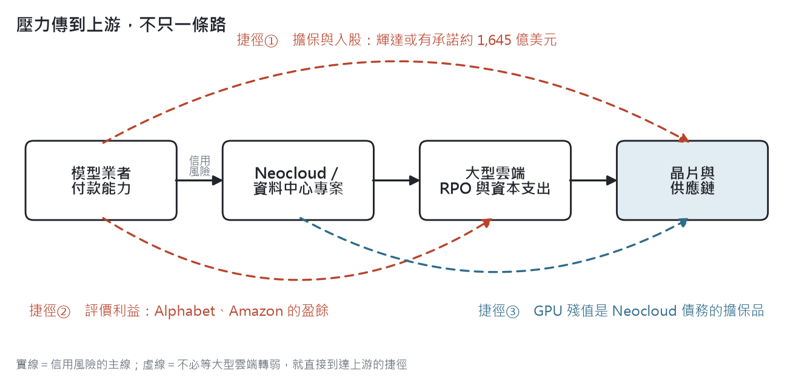
▲ 壓力傳到上游不只一條路：實線是信用風險的主線，虛線是三條不必等大型雲端轉弱、就直接到達上游的捷徑。
上游最早受傷的時點，不是大型雲端的資本支出衰退，而是資本支出的成長放緩。2000 年 Lucent 的繼續營業部門淨利在股價高點那一年就已經腰斬，比客戶倒閉早。
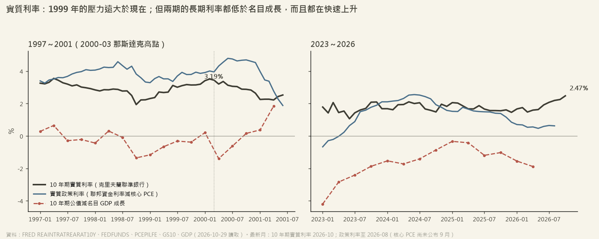
▲ 1999 年實質政策利率約 3.9%，現在約 0.6%，壓力遠小於當年。一樣的地方有兩個：兩期的 10 年期公債殖利率都低於名目 GDP 成長；長端實質利率在頂點前都急升約 100～120bp（現在 2.47%，還在升）。
GPU 租金是算力的成交價格，比訂單（RPO）和資本支出計畫更即時；它同時是 Neocloud 債務擔保品的價值。要看的是每單位電力的算力價格（租金 ÷ 功耗），因為電力才是建設的瓶頸。
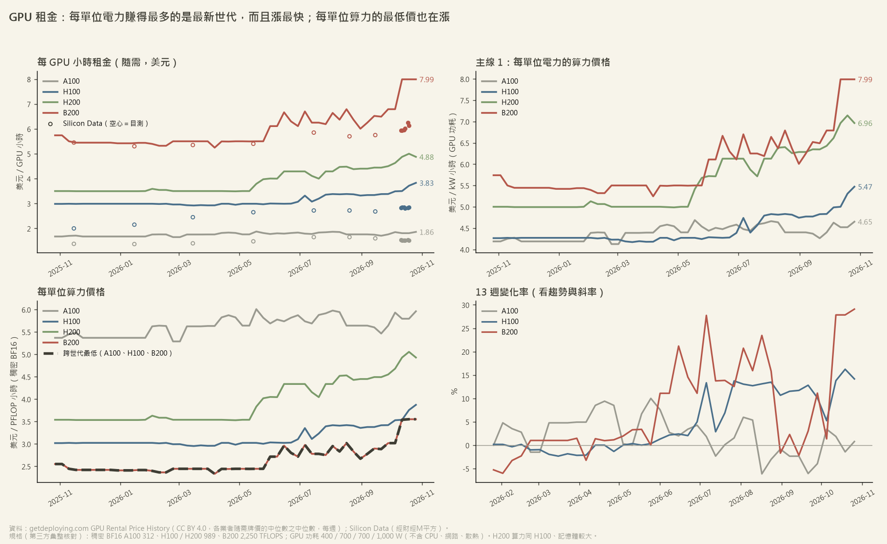
▲ 過去一年各世代都在漲。最新世代 B200 每 kW 時約 8 美元、近 13 週 +29%。正常情況下新世代會讓單位算力愈來愈便宜；現在反過來，最新世代最貴、也漲最快，是需求大於供給的直接證據。最舊的 A100 已經持平，是正常的世代更替。
租金上漲不一定等於應用蓬勃，也可能是供給瓶頸，或是靠融資撐起的需求，所以要和終端付費一起看。用同一個單位「每 GW 每年營收」比較：
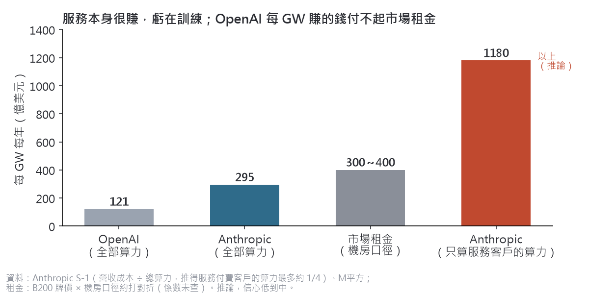
▲ Anthropic 的營收成本只占總算力約四分之一，其餘是訓練、研發與免費用戶。所以服務本身很賺，虧在訓練；而訓練的報酬取決於每一代模型能收幾個月的租（近 6 個月的模型占它 Q3 營收八成以上）。
雲端業者的訂單存量（RPO）裡，有很大一塊是兩家模型公司的算力承諾。依財經M平方 自算的 2026 年第二季 RPO 客戶結構，OpenAI 加 Anthropic 合計：微軟 48.6%、Google 38.5%、Amazon 68.5%、Oracle 47.0%；四家用 RPO 加權約一半。
| 雲端 | OpenAI | Anthropic | 兩家合計 |
|---|---|---|---|
| 微軟 | 44.2% | 4.4% | 48.6% |
| 0 | 38.5% | 38.5% | |
| Amazon | 28.2% | 40.3% | 68.5% |
| Oracle | 47.0% | 0 | 47.0% |
資料：財經M平方〈AI 需求解析〉，2026Q2 科技巨頭 RPO 客戶結構（自算，口徑未揭露）。四家合計為作者用各家 RPO 加權。M平方 同一張圖的標題是「巨頭客戶開始分散到更廣的領域」，看的是新增訂單的方向；這裡看的是存量。
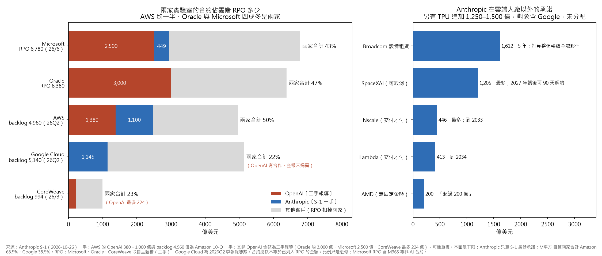
▲ 作者用公開金額畫的版本：Anthropic 只算 S-1 的最低承諾（一手），OpenAI 多為二手報導，所以比 M平方 的比例低，是下限。五家合計約 40%；換成 M平方 的估算約 50%。
這些承諾如果能兌現，資本支出的回收期限並不長。用現在的租金粗算，B200 約 1.6～2.1 年回收，和 Google 公開說的「AI 伺服器約 2 年」一致；SpaceX 財務長說少於 1 年，用的很可能是租給 Anthropic、Google 的急單高價（約每 GPU 小時 11.5 美元）。
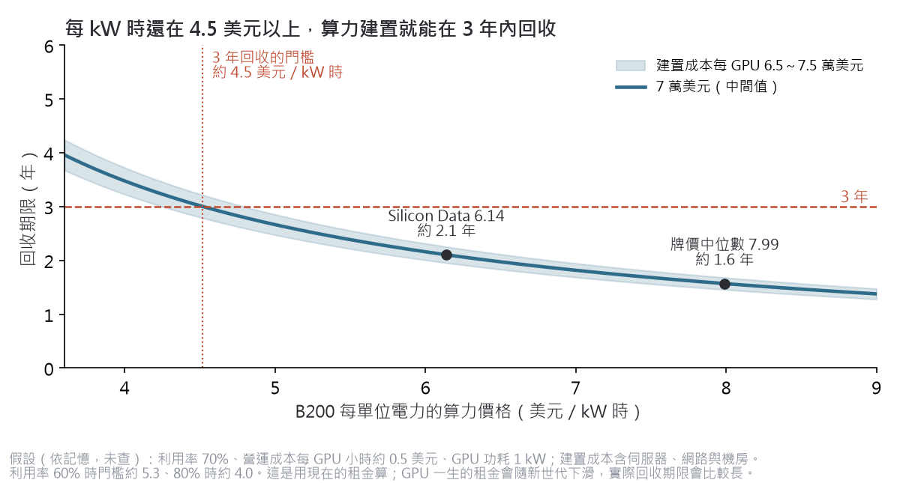
▲ 3 年回收的門檻約是每 kW 時 4.5 美元；現在的牌價中位數 7.99、Silicon Data 指數 6.14，還有三到四成的緩衝。建置成本與利用率是作者的假設，沒有查證。
所以最即時的證據就是每單位電力的算力價格。承諾能不能兌現，要等模型公司的季報；但租金每週都看得到。只要每 kW 時的價格守在門檻以上，「承諾兌現、3 年回本」這條路就還走得通；一旦它朝 4.5 美元收斂，回收期限會先拉長，資本支出接著被砍。
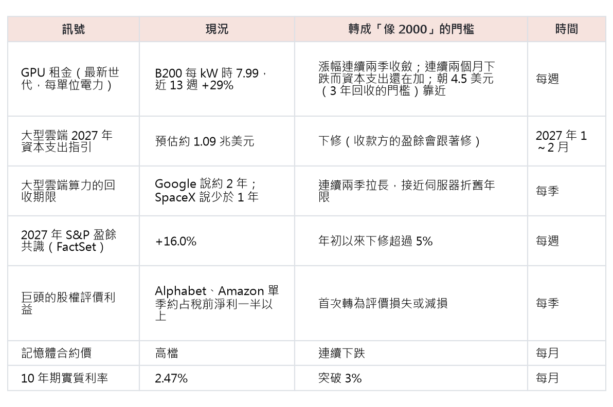
▲ 追蹤表：每個訊號的現況、轉成「像 2000」的門檻，以及多久看一次。
門檻是作者設定的，沒有經過歷史回測。
資料與限制。一手資料：FRED（BEA）、Alphabet／Amazon／輝達／微軟 10-Q、2000 年各公司 10-K、Anthropic S-1。第三方：FactSet Earnings Insight（2026-10-16）、Yardeni、multpl、Silicon Data、getdeploying.com GPU Rental Price History（CC BY 4.0）、財經M平方。2000 年「收建設支出的公司」名單只有 19 家，是下限；預估盈餘用 yfinance 的下一會計年度，比 FactSet 的未來 12 個月看得更遠。估值與比例多為作者自算，推論已在文中標明。
本文只整理資料與推論，不是投資建議。
延伸閱讀：Yardeni：Comparative tech wrecks · Odlyzko：The collapse of the Railway Mania · GetDeploying：GPU rental price history
德克 mur mur｜研究整理，不構成任何投資建議。資料來源與限制見文末。